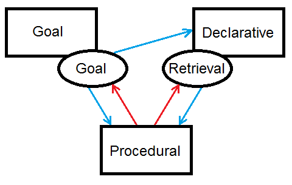
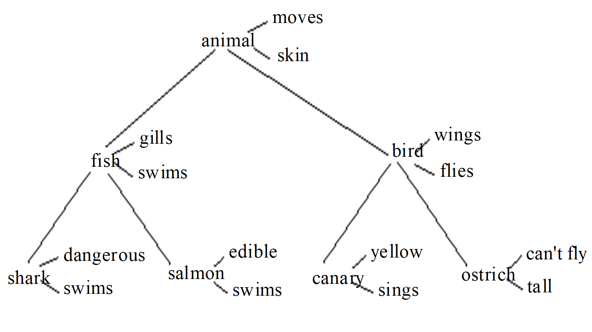

Unit 1: Introduction to ACT-R
ACT-R is a cognitive architecture. It is a theory of the structure of the brain at a level of abstraction that explains how it achieves human cognition. That theory is instantiated in the ACT-R software which allows one to create models which may be used to explain performance in a task and also to predict performance in other tasks. This tutorial will describe how to use the ACT-R software for modeling and provide some of the important details about the ACT-R theory. Detailed information on the ACT-R theory can be found in the paper “An integrated theory of the mind” and the book “How Can the Human Mind Occur in the Physical Universe?”. More information on the ACT-R software can be found in the reference manual which is included in the docs directory of the ACT-R software.
1.1 Knowledge Representations
There are two types of knowledge representation in ACT-R -- declarative knowledge and procedural knowledge. Declarative knowledge corresponds to things we are aware we know and can usually describe to others. Examples of declarative knowledge include “George Washington was the first president of the United States” and “An atom is like the solar system”. Procedural knowledge is knowledge which we display in our behavior but which we are not conscious of. For instance, no one can describe the rules by which we speak a language and yet we do. In ACT-R, declarative knowledge is represented in structures called chunks and procedural knowledge is represented as rules called productions. Chunks and productions are the basic building blocks of an ACT-R model.
1.1.1 Chunks in ACT-R
In ACT-R, elements of declarative knowledge are called chunks. Chunks represent knowledge that a person might be expected to have when they solve a problem. A chunk is a collection of attributes and values. The attributes of a chunk are called slots. Each slot in a chunk has a single value. A chunk also has a name which can be used to reference it, but that name is only a convenience for using the ACT-R software and is not considered to be a part of the chunk itself. Below are some representations of chunks that encode the facts that the dog chased the cat and that 4+3=7. The chunks are displayed as a name followed by the slot and value pairs. The name of the first chunk is action023 and its slots are verb, agent, and object, which have values of chase, dog, and cat respectively. The second chunk is named fact3+4 and its slots are addend1, addend2, and sum, with values three, four, and seven.
Action023
verb chase
agent dog
object cat
Fact3+4
addend1 three
addend2 four
sum seven
1.1.2 Productions in ACT-R
A production is a statement of a particular contingency that controls behavior. They can be represented as if-then rules and some examples might be:
IF the goal is to classify a person
and he is unmarried
THEN classify him as a bachelor
IF the goal is to add two digits d1 and d2 in a column
and d1 + d2 = d3
THEN create a goal to write d3 in the column
The condition of a production (the IF part) consists of a conjunction of features which must be true for the production to apply. The action of a production (the THEN part) consists of the actions the model should perform when the production is selected and used. The above are informal English specifications of productions. They give an overview of when the productions apply and what actions they should perform, but do not specify sufficient detail to actually implement a production in ACT-R.
1.2 The ACT-R Architecture
The ACT-R architecture consists of a set of modules. Each module performs a particular cognitive function and operates independently of other modules. We will introduce three modules in this unit and describe their basic operations. Later units will provide more details on the operations of these modules and also introduce other modules.
The modules communicate through an interface we call a buffer. Each module may have any number of buffers for communicating with other modules. A buffer relays requests to its module to perform actions, it responds to queries about the status of the module and the buffer itself, and it can hold one chunk at a time which is usually placed into the buffer as the result of an action which was requested. The chunk in a buffer is available for all modules to see and modify, and the set of chunks in all of the buffers is the information that is immediately available to the model.
1.2.1 Goal Module
The goal module is the simplest of the modules in ACT-R. It has one buffer named goal which is used to hold a chunk which contains the current control information the model needs for performing its current task. The only request to which the module responds is for the creation of a new goal chunk. It responds to the request by immediately creating a chunk with the information contained in the request and placing it into the goal buffer.
1.2.2 Declarative Module
The declarative module stores all of the chunks which represent the declarative knowledge the model has which is often referred to as the model’s declarative memory. It has one buffer named retrieval. The declarative module responds to requests by searching through declarative memory to find the chunk which best matches the information specified in the request and then placing that chunk into the retrieval buffer. In later units we will cover that process in more detail to describe how it determines the best match and how long the process takes. For the models in this unit, there will never be more than one chunk which matches the request and the time cost will be fixed in the models at 50 milliseconds per request.
The declarative memory in a model consists of the chunks which are placed there initially by the modeler when defining the model and the knowledge which it learns as it runs. The learned knowledge is collected from the buffers of all of the modules. The declarative module monitors all of the buffers, and whenever a chunk is cleared from one of them the declarative module stores that chunk for possible later use.
1.2.3 Procedural Module
The procedural module holds all of the productions which represent the model’s procedural knowledge. It does not have a buffer of its own1, and unlike other modules the procedural module does not take requests for actions. Instead, it is constantly monitoring the activity of all the buffers looking for patterns which satisfy the condition of some production. When it finds a production which has its condition met then it will execute the actions of that production, which we refer to as “firing” the production. Only one production can fire at a time and it takes 50 milliseconds from the time the production was matched to the current state until the actions happen. In later units we will look at what happens if more than one production matches at the same time, but for this unit all of the productions in the models will have their conditions specified so that at most one will match at any point in time.
1.2.4 Overview
These three modules are used in almost every model which is written in ACT-R, and early versions of ACT-R consisted entirely of just these three components. Here is a diagram showing how they fit together in the architecture with the rectangles representing the modules and the ovals representing the buffers:

The blue arrows show which modules read the information from another module’s buffer, and the red arrows show which modules make requests to another module’s buffer or directly modify the chunk it contains. As we introduce new modules and buffers in the tutorial, each of the buffers will have the same interface as shown for the goal buffer – both the procedural and declarative modules will read the buffer information and the procedural module will modify and make requests to the buffer.
1.3 ACT-R Software and Models
Now that we have described the basic components in ACT-R, we will step back and describe the ACT-R software and how one creates and runs a model using it. This tutorial is written for version 7.28 (or newer) of the ACT-R software. Current versions of the ACT-R software are distributed primarily as applications and the tutorial instructions will assume that the user is running one of those applications, but like the previous versions, the source code is available for those that prefer to run from sources. The main ACT-R software is implemented in the ANSI Common Lisp programming language, but it is not necessary to know how to program in Lisp to be able to use ACT-R because it is essentially its own language which will be described in the tutorial. In prior versions of the software it was necessary to interact with ACT-R through Lisp code, and one had to write Lisp code to build experiments or other tasks for the model to perform. However, starting with version 7.6, ACT-R provides a remote interface that can be used to interact with ACT-R from essentially any programming language, and the tutorial materials include a Python module (in the Python use of the term module not the ACT-R use as a cognitive component of the architecture) which provides functions for accessing ACT-R through that remote interface2. Using that Python module, all of the tasks for the models in the tutorial are implemented in Python as well as in Lisp, and either version can be used with the models of the tutorial (the models do not depend upon which version of the task is being used). There are also examples of connecting other programming languages included with the ACT-R software, but only Lisp and Python will be used directly in the tutorial.
1.3.1 Starting ACT-R
To run the ACT-R software you need to run the startup script named run-act-r that is included with the standalone version for your operating system (versions are available for Linux, macOS, and Windows). That will open two windows for the ACT-R software. The one titled “ACT-R” is an interactive Lisp session which contains the main ACT-R system and can be used to interact with ACT-R directly. The other window, titled “Control Panel”, contains a set of GUI tools called the ACT-R Environment3. The ACT-R Environment is an optional set of tools for interacting with the ACT-R system and the use of some of those tools will be described during the tutorial. Additional information on running the software can be found in the readme.txt file and there are short videos on the ACT-R software site showing the typical OS protection warnings one may need to respond to the first time it is run. More information on the Environment tools can be found in the Environment’s manual included in the docs directory of the software. You may close the ACT-R Environment window if you do not wish to use those tools (note however that the Environment tools are necessary to perform the tutored model running exercises described in this unit and it should not be closed now). Closing the ACT-R window will exit the software.
For this unit there are no tasks for the models to interact with, and all of the interaction with the software can be done through the ACT-R Environment. For that reason, we will not describe how to use the Python module yet since there is no need for it, but it will be described in the next unit which includes interactive tasks for the models to perform.
1.3.2 Interacting with Lisp
Although it is not necessary to use the Lisp interface for ACT-R, it can be convenient and some familiarity with Lisp syntax can be helpful since the syntax for creating ACT-R models is based on Lisp syntax. Lisp is an interactive language and provides a prompt at which the user can issue commands and evaluate code. The prompt in the ACT-R software window is the “?” character. To evaluate (also sometimes referred to as “calling”) a command in Lisp at the prompt requires placing it between parentheses along with any parameters which it requires separated by whitespace and then hitting enter or return. As an example, to evaluate the command to add the numbers 3 and 4 requires calling the command named “+” with those parameters. That means one would type this at the prompt:
(+ 3 4)
and then hit the enter or return key. The system will then print the result of evaluating that command and display a new prompt:
? (+ 3 4)
7
?
One minor issue to note is that sometimes the output from the ACT-R system will overwrite the prompt character and it will not be visible in the ACT-R window. When that happens you can still evaluate commands by entering them at the bottom of the window and pressing enter or return.
1.3.3 ACT-R models
An ACT-R model is a simulated cognitive agent. A model is typically written in a text file that contains the ACT-R commands that specify how the model works, and that model file can be opened and edited in any application that can operate on text files. Because the ACT-R model syntax is based on Lisp syntax using an editor which provides additional support for Lisp formatting, like matching parentheses and automatic indenting, can be useful but is not necessary. There is a very simple text editor included with the ACT-R Environment which will do parenthesis matching, but beyond that it is a very limited text editor.
As we progress through the tutorial we will describe the ACT-R commands which one can use to create models. Later in this unit we will introduce the commands for initializing a model and creating the knowledge structures described above (chunks and productions).
1.3.4 Loading a model
To use an ACT-R model file it must be “loaded” into ACT-R. There are many ways to do so, but for this unit we will simply use the button in the ACT-R Environment labeled “Load ACT-R code”. In the next unit we will show how to load a model using an ACT-R command that can be called from the Lisp prompt or from an external connection, like the Python module. When the model file is loaded, the commands it contains are evaluated in order from the top down.
1.3.5 Running a model
Once a model has been loaded, you can run it. Models that do not interact with a task can typically be run by just calling the ACT-R run command. The run command requires one parameter, which is the maximum length of simulated time to run the model measured in seconds. Again, for this unit we will be using the tool in the ACT-R Environment instead of using the command itself. That tool is the “Run” button in the Environment and the text entry box to its right is where the time to run the model can be entered. The default time in that box is 10.0 which means pressing the “Run” button will run the model for up to 10 simulated seconds.
In later units, where the models will be interacting with various tasks, just pressing the “Run” button or calling the run command may not be sufficient because one might also have to run the task itself. When that is the case the tutorial will describe what is necessary to run the model and the task, and there is an additional text included with each unit which provides additional information about how the tasks are implemented and the ACT-R commands involved (those are the texts with a name that ends with “_code”).
1.4 Creating an ACT-R Model
Creating an ACT-R model requires writing the text file which contains the ACT-R commands to specify the details of the model and the initial knowledge it contains. Also, in addition to the model’s details, one often includes commands for controlling the general state of the ACT-R system itself.
1.4.1 ACT-R control commands
When creating an ACT-R model, there are two ACT-R commands for controlling the system which will almost always occur in the model file, and we will describe those commands first.
1.4.1.1 clear-all
The clear-all command will usually occur at the top of every model file. This command requires no parameters and tells ACT-R that it should remove any models which currently exist and return ACT-R to its initial state. It is not necessary to call clear-all in a model file, but unless one is planning on running multiple models together it is strongly recommended that it occur as the first command to make sure that the model starts with the system in a properly initialized state.
1.4.1.2 define-model
The define-model command is how one actually creates an ACT-R model. Within the call to define-model one specifies a name for the model and then includes all of the calls to ACT-R commands that will provide the initial conditions and knowledge for that model. When the model file is loaded, define-model will create the model with the conditions specified, and then whenever ACT-R is reset that model will be returned to that same initial state.
1.4.2 Chunk-Types
Before describing the commands for creating the model’s initial knowledge with chunks and productions, we will first describe an additional component of the software which can be useful when creating a model. There is an optional capability available in the ACT-R software called a chunk-type. A chunk-type is a way for the modeler to specify categories for the knowledge in the model by indicating a set of slots which will be used together in the creation and testing of chunks. A chunk-type consists of a name for the chunk-type and a set of slot names. That chunk-type name may then be used as a declaration when creating chunks and productions in the model.
The command for creating a chunk type is called chunk-type. It requires a name for the new chunk-type to create and then any number of slot names. The general chunk-type specification looks like this:
(chunk-type type-name slot-name-1 slot-name-2 … slot-name-n)
and here are some examples which could have been used in a model which created the example chunks shown earlier:
(chunk-type action verb agent object)
(chunk-type addition-fact addend1 addend2 sum)
The first creates a chunk-type named action which includes the slots verb, agent, and object. The other creates a chunk-type named addition-fact with slots addend1, addend2, and sum.
It is important to note that using a chunk-type declaration does not directly affect the operation of the model itself – the chunk-type is not a component of the ACT-R architecture. They exist in the software to help the modeler specify the model components. Creating and using meaningful chunk-types can make a model easier to read and understand. They also allow the ACT-R software to verify that the specification of chunks and productions in a model is consistent with the chunk-types that were created for that model which allows it to provide warnings when inconsistencies or problems are found relative to the chunk-types which are specified.
Although chunk-types are not required when writing an ACT-R model, most of the models in the tutorial will be written with chunk-type declarations included, and using chunk-types is strongly recommended.
1.4.3 Creating Chunks
The command to create a set of chunks and place those chunks into the model’s declarative memory is called add-dm. It takes any number of chunk specifications as its arguments. As an example, we will show the chunks from the count model included with the tutorial that will be described in greater detail later in this unit. First, here are the chunk-type specifications used in that model:
(chunk-type number number next)
(chunk-type count-from start end count)and here is the specification of the initial chunks which are placed into that model’s declarative memory:
(add-dm
(one ISA number number one next two)
(two ISA number number two next three)
(three ISA number number three next four)
(four ISA number number four next five)
(five ISA number number five))Each chunk for add-dm is specified in a list – a sequence of items enclosed in parentheses. The first element of the list is the name of the chunk. The name may be anything which is not already used as the name of a chunk as long as it starts with an alphanumeric character and is a valid Lisp symbol (essentially a continuous sequence of characters which does not contain any of the symbols: period, comma, single quote, double quote, back quote, left or right parenthesis, backslash, or semicolon). In the example above the names are one, two, three, four, and five. The purpose of the name is to provide a way for the modeler to refer to the chunk. The name is not considered to be a part of the chunk, and it can in fact be omitted, which will result in the system automatically generating a unique name for the chunk.
The next component of the chunk specification is the optional declaration of a chunk-type to describe the chunk being created. That consists of the symbol isa followed by the name of a chunk-type. Note that here we have capitalized the isa symbol to help distinguish it from the actual slots of the chunk, but that is not necessary and in most cases the symbols and names used in ACT-R commands are not case sensitive.
The rest of the chunk specification is pairs of a slot name and a value for that slot. The slot-value pairs can be specified in any order and the order does not matter. When a chunk-type declaration is provided, it is not necessary to specify a value for every slot indicated in that chunk-type, but if a slot which is not specified in that chunk-type is provided ACT-R will generate a warning to indicate the potential problem to the modeler.
1.4.4 Creating Productions
As indicated above, each production is a condition-action rule. Those rules are used by the procedural module to monitor the buffers of all the other modules to determine when to perform actions. The condition specifies tests for the contents of the buffers as well as the general state of the buffers and their modules. The action of a production specifies the set of operations to perform when the production is fired, and will consist of changes to be made to the chunks in buffers along with new requests to be sent to the modules.
The command for creating a production in ACT-R is called p, and the general format for creating a production is:
(p Name "optional documentation string"
buffer tests
==>
buffer changes and requests
)
Each production must have a unique name and may also have an optional documentation string to describe it. That is followed by the condition for the production. The buffer tests in the condition of the production are patterns to match against the current buffers’ contents and queries of the buffers for buffer and module state information. The condition of the production is separated from the action of the production by the three character sequence ==>. The production’s action consists of any buffer changes and requests which the production will make.
In separate subsections to follow we will describe the syntax involved in specifying the condition and the action of a production. In doing so we will use an example production that counts from one number to the next based on a chunk which has been retrieved from the model’s declarative memory. It is similar to those used in the example models for this unit, but is slightly simpler than they are for example purposes. Here is the specification of the chunk-types used in the example production:
(chunk-type number number next)
(chunk-type count state current)
Here is the example production, which is named counting-example:
(P counting-example
"example production for counting in tutorial unit 1 text"
=goal>
ISA count
state incrementing
current =num1
=retrieval>
number =num1
next =num2
==>
=goal>
ISA count
current =num2
+retrieval>
ISA number
number =num2
)
It is not necessary to space the production definition out over multiple lines or indent the components as shown above. It could be written on one line with only a single space between each symbol and still be a valid production for ACT-R. Because of that, the condition of the production is also often referred to as the left-hand side (or LHS) and the action as the right-hand side (or RHS), because of their positions relative to the ==> separator. However, since adding additional white space characters between the items does not affect the definition of a production, they are typically written spaced out over several lines to make them easier to read.
The symbols used in the production definition are also not case sensitive. The symbol ISA is only capitalized for emphasis in the example and it could have been written as isa, Isa, or any other combination of capital and lowercase letters with the same result.
1.4.4.1 Production Condition: Buffer Pattern Matching
The condition of the counting-example production specifies a pattern to match to the goal buffer and a pattern to match to the retrieval buffer. A buffer pattern begins with a symbol that starts with the character “=” and ends with the character “>”. Between those characters is the name of the buffer to which the pattern is applied. Thus, the symbol =goal> indicates a pattern used to test the chunk in the goal buffer and the symbol =retrieval> indicates a pattern to test the chunk in the retrieval buffer. For a production’s condition to match, the first thing that must be true is that there be a chunk in each of the buffers being tested. Thus, if there is no chunk in either the goal or retrieval buffer, often referred to as the buffer being empty or cleared, this example production cannot match.
After indicating which buffer to test, an optional declaration may be made using the symbol isa and the name of a chunk-type to provide a declaration of the set of slots which are being used in the test. In the example production, the goal buffer pattern includes a declaration that the slots being tested are from the count chunk-type, but the retrieval buffer pattern does not declare a type for the set of slots specified. It is recommended that one create chunk-types and use the isa declarations when writing productions, but this one has been omitted for demonstration purposes. The important thing to remember is that the isa declaration is not a part of the pattern to be tested – it is only a declaration to allow the ACT-R software to verify that the slots used in the pattern are consistent with the chunk-type indicated.
The remainder of the pattern consists of slot tests for the chunk in the specified buffer. A slot test consists of an optional modifier (which is not used in any of the tests in this example production), the name of a slot for the chunk in the buffer, and a specification of the value that slot of the chunk in the buffer must have. The value may be specific as a constant value, a variable, or the Lisp symbol nil.
Here is the goal buffer pattern from the example production again for reference:
=goal>
ISA count
state incrementing
current =num1
The first slot test in the pattern is for a slot named state with a constant value of incrementing. Therefore for this production to match, the chunk in the goal buffer must have a slot named state which has the value incrementing. The next slot test in the pattern involves the slot named current and a variable value.
The “=” prefix on a symbol in a production is used to indicate a variable. The name of the variable can be any symbol, and it is recommended that the variable names be chosen to help make the production easier for a person reading it to understand. Variables are used in a production to generalize the condition and action, and they have two basic purposes. In the condition, variables can be used to compare the values in different slots, for instance that they have the same value or different values, without needing to know all of the possible values those slots could have. The other purpose for a variable is to copy a value from a slot specified in the condition to another slot specified in the action of the production.
There are two properties of variables used in productions which are important. Every slot tested with a variable in the condition must exist in the chunk in the buffer for the pattern to match. Also, a variable is only meaningful within a specific production—using the same variable name in different productions does not create any relation between those productions.
Given that, we could describe this production’s test for the goal buffer like this:
There must be a chunk in the goal buffer. It must have a slot named state with the value incrementing, and it must have a slot named current whose value we will refer to using the variable =num1.
Now, we will look at the retrieval buffer’s pattern in detail:
=retrieval>
number =num1
next =num2
The first slot test it has tests the slot named number with the variable =num1. Since the variable =num1 was also used in the goal buffer test, this is testing that the number slot of the chunk in the retrieval buffer has the same value as the current slot of the chunk in the goal buffer. The other slot test for the retrieval buffer is for the slot named next using a variable named =num2.
Therefore, the test for the retrieval buffer can be described as:
There must be a chunk in the retrieval buffer. It must have a slot named number which has the same value as the slot named current of the chunk in the goal buffer, and it must have a slot named next whose value we will refer to using the variable =num2.
This example production did not include all of the possible items which one may need in writing the condition for a production, but it does cover the basics of the pattern matching applied to chunks in buffers. We will describe how one queries the buffer and module state later in this unit, and additional production condition details will be introduced in future units.
1.4.4.2 Production Action
The action of a production consists of a set of operations which affect the buffers. Here is the RHS from the example production again:
=goal>
ISA count
current =num2
+retrieval>
ISA number
number =num2
The RHS of a production is specified much like the LHS with actions to perform on particular buffers. An action for a buffer is specified by a symbol which starts with a character that indicates the action to take, followed by the name of the buffer, and then the character ">". That is followed by an optional chunk-type declaration using isa and a chunk-type name and then the specification of slots and values to detail the action to perform. There are five different operations that can be performed with a buffer. The three most common will be described in this unit. The other operations will be described later in the tutorial.
1.4.4.2.a Buffer Modifications, the = action
If the buffer name is prefixed with the character "=" then the action is for the production to immediately modify the chunk currently in that buffer. Each slot specified in a buffer modification action indicates a change to make to the chunk in the buffer. If the chunk already has such a slot its value is changed to the one specified. If the chunk does not currently have that slot then that slot is added to the chunk with the value specified.
Here is the action for the goal buffer from the example production:
=goal>
ISA count
current =num2
It starts with the character "=" therefore this is a modification to the buffer. It will change the value of the current slot of the chunk in the goal buffer (since we know that it has such a slot because it was tested in the condition of the production) to the value referred to by the variable =num2 (which is the value that the next slot of the chunk in the retrieval buffer had in the condition). This is an instance of a variable being used to copy a value from one slot to another.
An important constraint on the use of the modification action is that a production can only use it for buffers that were matched to a pattern in the condition of the production – the production must test that there is a chunk in the buffer before it can modify it.
1.4.4.2.b Buffer Requests, the + action
If the buffer name is prefixed with the character "+", then the action is a request to that buffer’s module, and we will often refer to such an action as a “buffer request” where buffer is the name of the buffer indicated e.g. a retrieval request or a goal request. Typically a request results in the module replacing the chunk in the buffer with a different one, but not all modules handle requests the same way. As was noted above, the goal module handles requests by creating new chunks and the declarative module uses the request to find a matching chunk in the model’s declarative memory to place into the buffer. In later units of the tutorial we will also describe modules that perform perceptual and motor actions in response to requests.
Here is the retrieval request from the example production:
+retrieval>
ISA number
number =num2
It is asking the declarative module to find a chunk that has a slot named number that has the same value as =num2. If such a chunk exists in the model’s declarative memory it will be placed into the retrieval buffer.
1.4.4.2.c Buffer Clearing, the - action
A third type of action that can be performed with a buffer is to explicitly clear the chunk from the buffer. This is done by placing the "-" character before the buffer name in the action. Thus, this action on the RHS of a production would clear the chunk from the retrieval buffer:
-retrieval>
Clearing a buffer occurs immediately and results in the buffer being empty and the declarative module storing the chunk which was in the buffer in the model’s declarative memory.
1.4.4.2.d Implicit Clearing
In addition to the explicit clearing action one can make, there are situations which will implicitly clear a buffer. Any buffer request with a “+” action will also cause that buffer to be cleared. Therefore, the retrieval request from the example production will also result in the retrieval buffer being automatically cleared at the time the request is made. We will see another situation where implicit clearing occurs later in the unit.
1.5 The Count Model
The first model we will run is a simple one that counts up from one number to another, for example it will count up from 2 to 4 – 2,3,4. It is included with the tutorial files for unit 1 in the file named “count.lisp”. You should now start the ACT-R software if you have not done so already, and then load the count model by pressing the “Load ACT-R code” button on the ACT-R Environment Control Panel and selecting the “count.lisp” file.
When you do that, you should see a window open up which says “Successful Load”, with no other text in the window. You should press the “Ok” button on that window to continue. If there had been any problems when loading the file then details about those issues would have been shown in that window.
Now you should run the model by pressing the “Run” button in the ACT-R Environment Control Panel. That will run the model for up to 10 seconds, since the default time shown next to the button is 10.0. When you do that, you should see the following output in the ACT-R window:
0.000 GOAL SET-BUFFER-CHUNK GOAL (ISA COUNT-FROM START TWO END FOUR) NIL
0.000 PROCEDURAL CONFLICT-RESOLUTION
0.000 PROCEDURAL PRODUCTION-SELECTED START
0.000 PROCEDURAL BUFFER-READ-ACTION GOAL
0.050 PROCEDURAL PRODUCTION-FIRED START
0.050 PROCEDURAL MOD-BUFFER-CHUNK GOAL
0.050 PROCEDURAL MODULE-REQUEST RETRIEVAL
0.050 PROCEDURAL CLEAR-BUFFER RETRIEVAL
0.050 DECLARATIVE start-retrieval
0.050 PROCEDURAL CONFLICT-RESOLUTION
0.100 DECLARATIVE RETRIEVED-CHUNK TWO
0.100 DECLARATIVE SET-BUFFER-CHUNK RETRIEVAL TWO
0.100 PROCEDURAL CONFLICT-RESOLUTION
0.100 PROCEDURAL PRODUCTION-SELECTED INCREMENT
0.100 PROCEDURAL BUFFER-READ-ACTION GOAL
0.100 PROCEDURAL BUFFER-READ-ACTION RETRIEVAL
0.150 PROCEDURAL PRODUCTION-FIRED INCREMENT
TWO
0.150 PROCEDURAL MOD-BUFFER-CHUNK GOAL
0.150 PROCEDURAL MODULE-REQUEST RETRIEVAL
0.150 PROCEDURAL CLEAR-BUFFER RETRIEVAL
0.150 DECLARATIVE start-retrieval
0.150 PROCEDURAL CONFLICT-RESOLUTION
0.200 DECLARATIVE RETRIEVED-CHUNK THREE
0.200 DECLARATIVE SET-BUFFER-CHUNK RETRIEVAL THREE
0.200 PROCEDURAL CONFLICT-RESOLUTION
0.200 PROCEDURAL PRODUCTION-SELECTED INCREMENT
0.200 PROCEDURAL BUFFER-READ-ACTION GOAL
0.200 PROCEDURAL BUFFER-READ-ACTION RETRIEVAL
0.250 PROCEDURAL PRODUCTION-FIRED INCREMENT
THREE
0.250 PROCEDURAL MOD-BUFFER-CHUNK GOAL
0.250 PROCEDURAL MODULE-REQUEST RETRIEVAL
0.250 PROCEDURAL CLEAR-BUFFER RETRIEVAL
0.250 DECLARATIVE start-retrieval
0.250 PROCEDURAL CONFLICT-RESOLUTION
0.300 DECLARATIVE RETRIEVED-CHUNK FOUR
0.300 DECLARATIVE SET-BUFFER-CHUNK RETRIEVAL FOUR
0.300 PROCEDURAL CONFLICT-RESOLUTION
0.300 PROCEDURAL PRODUCTION-SELECTED STOP
0.300 PROCEDURAL BUFFER-READ-ACTION GOAL
0.300 PROCEDURAL BUFFER-READ-ACTION RETRIEVAL
0.350 PROCEDURAL PRODUCTION-FIRED STOP
FOUR
0.350 PROCEDURAL CLEAR-BUFFER GOAL
0.350 PROCEDURAL CLEAR-BUFFER RETRIEVAL
0.350 PROCEDURAL CONFLICT-RESOLUTION
0.350 ------ Stopped because no events left to processThis output is called the trace of the model. Each line of the trace represents one event that occurred during the running of the model. Each event shows the time in seconds at which it happened, the ACT-R mechanism that generated the event (typically the name of a module), and some details describing the event. Any output generated by the model is also shown in the trace. The level of detail provided in the trace can be changed to see more or less information as needed4, and this model is set to show the most information possible. That is more information than is typically needed, but some of the steps that will help to understand how the system works are only shown at this level of detail.
You should now open the count model in a text editor (if you have not already) to begin looking at how the model is specified. Since we will not be editing the file, the simple editor provided by the ACT-R Environment is sufficient to see the model definition, and you can use that by pressing the “Open File” button on the Control Panel.
The first two commands used in the model file are clear-all and define-model as described above, and the rest of the file contains the model definition within the define-model call.
The first item in the model definition is a call to the sgp command which is used to set parameters for the model. We will not describe that here, but it is covered in the code description document. The rest of the model definition contains the chunks and productions for performing this task, and we will look at those in detail.
1.5.1 Chunk-types for the Count model
The model definition has two specifications for chunk-types used by this model:
(chunk-type number number next)
(chunk-type count-from start end count)The number chunk-type specifies the slots that will be used to encode the ordering of numbers. It contains a slot named number which indicates the current number and a slot named next which indicates the next number in order.5 The count-from chunk type specifies the slots that will be used for the goal buffer chunk of the model, and it has slots to hold the starting number, the ending number, and the current count.
1.5.2 Declarative Memory for the Count model
After the chunk-types we find the initial chunks placed into the declarative memory of the model using the add-dm command:
(add-dm
(one ISA number number one next two)
(two ISA number number two next three)
(three ISA number number three next four)
(four ISA number number four next five)
(five ISA number number five))Each of the lists in the add-dm command specifies one chunk. The first five define chunks named one, two, three, four, and five. Each chunk represents a number, and contains slots indicating the number it represents and the next number in order. This is the knowledge that enables the model to count.
1.5.3 Setting the Initial Goal
The next thing we see is a call to the command goal-focus with the description of a chunk similar to what was used in add-dm:
(goal-focus (isa count-from start two end four))The goal-focus command allows the modeler to provide the description of a chunk to place into the goal buffer when the model starts to run. The chunk described there encodes the goal of counting from two (in slot start) to four (in slot end). Note that the chunk-type count-from has another slot called count which is not used in the goal chunk description. Because the count slot is not included the chunk will not have a slot named count. When the model starts to run, the results of that command can be seen in the first line of the trace shown above and copied here with color coding for reference:
0.000 GOAL SET-BUFFER-CHUNK GOAL (ISA COUNT-FROM START TWO END FOUR) NIL
It shows that at time 0.000 the goal module performed the set-buffer-chunk action (the ACT-R command for placing a chunk into a buffer) for the goal buffer with the chunk description (ISA COUNT-FROM START TWO END FOUR) that was in the goal-focus command. It also indicates that this action was not requested by a production in the model (the NIL at the end of the event details).
1.5.4 The Productions
The rest of the model definition is the productions which can use the chunks from declarative memory to count, and we will look at each of the production specifications in detail along with the selection and firing of those productions as shown in the trace of the model run above.
1.5.4.1 The Start Production
(p start
=goal>
ISA count-from
start =num1
count nil
==>
=goal>
ISA count-from
count =num1
+retrieval>
ISA number
number =num1
)The LHS of the start production tests the goal buffer. It tests that there is a value in the start slot which it now references with the variable =num1. This is often referred to as binding the variable, as in, =num1 is bound to the value that is in the start slot. It also tests the count slot for the value nil. The value nil is a special value that can be used when testing and setting slots. Nil is the Lisp symbol which represents both the boolean false and null (the empty list). Its use in a slot test is to check that the slot does not exist in the chunk. Thus, that is testing that the chunk in the goal buffer does not have a slot named count.
The RHS of the start production performs two actions. The first is a modification of the chunk in the goal buffer. That modification will add the slot named count to the chunk in the goal buffer (since the condition tested that it does not have such a slot) with the value that is bound to =num1. The other action is a request of the retrieval buffer. All requests to the declarative module (the retrieval buffer’s module) perform a search of the chunks in declarative memory to find one that matches the information provided and then place that chunk into the retrieval buffer. This request is asking the declarative module to find a chunk that has the value which is bound to =num1 in its number slot.
Looking at the model trace, we see that the first production that gets selected and fired by the model is the production start:
0.000 PROCEDURAL CONFLICT-RESOLUTION
0.000 PROCEDURAL PRODUCTION-SELECTED START
0.000 PROCEDURAL BUFFER-READ-ACTION GOAL
0.050 PROCEDURAL PRODUCTION-FIRED START
The first line shows that the procedural module is performing an action called conflict-resolution. That action is the process which the procedural module uses to select which of the productions that matches the current state (if any) to fire next. The next line shows that among those that matched, the start production was selected. The important thing to remember is that the production was selected because its condition was satisfied. It did not get selected because it was the first production listed in the model or because it has the name start. The third line shows that the selected production’s condition tested the chunk in the goal buffer. That last line, which happens 50 milliseconds later (time 0.050), shows that the start production has now fired and its actions will take effect. The 50ms time is a parameter of the procedural module, and by default every production will take 50ms between the time it is selected and when it fires.
The actions of the production are seen as the next two lines of the trace:
0.050 PROCEDURAL MOD-BUFFER-CHUNK GOAL
0.050 PROCEDURAL MODULE-REQUEST RETRIEVAL
Mod-buffer-chunk is the action which modifies a chunk in a buffer, in this case the goal buffer, and module-request indicates that a request is being sent to a module through the indicated buffer.
The next line of the trace is also a result of the RHS of the start production:
0.050 PROCEDURAL CLEAR-BUFFER RETRIEVAL
That is the implicit clearing of the buffer which happens because of the request that was made.
The next line in the trace is a notification from the declarative module that it has received a request and has started the chunk retrieval process:
0.050 DECLARATIVE start-retrieval
That is followed by the procedural system now trying to find a new production to fire:
0.050 PROCEDURAL CONFLICT-RESOLUTION
However, it is not followed by a notification of a production being selected, because there is no production whose condition is satisfied at this time.
The following two lines show the successful completion of the retrieval request by the declarative module after another 50ms have passed and then the setting of the retrieval buffer with that chunk.
0.100 DECLARATIVE RETRIEVED-CHUNK TWO
0.100 DECLARATIVE SET-BUFFER-CHUNK RETRIEVAL TWO
Now we see conflict resolution occurring again and this time the increment production is selected.
0.100 PROCEDURAL CONFLICT-RESOLUTION
0.100 PROCEDURAL PRODUCTION-SELECTED INCREMENT
1.5.4.2 The Increment Production
(p increment
=goal>
ISA count-from
count =num1
- end =num1
=retrieval>
ISA number
number =num1
next =num2
==>
=goal>
ISA count-from
count =num2
+retrieval>
ISA number
number =num2
!output! (=num1)
)On the LHS of this production we see that it tests both the goal and retrieval buffers. In the test of the goal buffer it uses a modifier in the testing of the end slot:
=goal>
ISA count-from
count =num1
- end =num1
The “-” in front of the slot is the negative test modifier. It means that the following slot test must not be true for the test to be successful. The test is that the end slot of the chunk in the goal buffer have the value bound to the =num1 variable (which is the value from the count slot of the chunk in the buffer). Thus, this test is true if the end slot of the chunk in the goal buffer does not have the same value as the count slot since they are tested with the same variable =num1. Note that the negation of the end slot test would also be true if the chunk in the goal buffer did not have a slot named end because a test for a slot value in a slot which does not exist is false, and thus the negation of that would be true.
The retrieval buffer test checks that there is a chunk in the retrieval buffer which has a value in its number slot that matches the current count slot from the goal buffer chunk and binds the variable =num2 to the value of its next slot:
=retrieval>
ISA number
number =num1
next =num2
We can see that these two buffers were tested by the production in the next two lines of the trace:
0.100 PROCEDURAL BUFFER-READ-ACTION GOAL
0.100 PROCEDURAL BUFFER-READ-ACTION RETRIEVAL
Now we will look at the RHS of this production:
=goal>
ISA count-from
count =num2
+retrieval>
ISA number
number =num2
!output! (=num1)
The first two actions are very similar to those in the start production. It modifies the chunk in the goal buffer to change the value of the count slot to the next number, which is the value of the =num2 variable, and it makes a retrieval request to get the chunk representing that next number. The third action is a special command that can be used in the actions of a production:
!output! (=num1)
!output! (pronounced bang-output-bang) can be used on the RHS of a production to display information in the trace. It is followed by items in parentheses and those items will be printed in the trace when the production fires. In this production it is used to display the numbers as the model counts. The results of the !output! in the first firing of increment can be seen in the trace after the production fires:
0.150 PROCEDURAL PRODUCTION-FIRED INCREMENT
TWO
The output is displayed on one line in the trace after the notice that the production has fired. The items in the list to output can be variables as is the case here (=num1), constant items like (stopping), or a combination of the two e.g. (the number is =num). When a variable is included in the items to output the value to which it was bound in the production will be used in the output displayed. That is why the trace shows TWO instead of =num1.
The next few lines of the trace show the actions initiated by the increment production and they look very much like the actions that the start production generated. The goal buffer is modified, a retrieval request is made, a chunk is retrieved, and then that chunk is placed into the retrieval buffer:
0.150 PROCEDURAL MOD-BUFFER-CHUNK GOAL
0.150 PROCEDURAL MODULE-REQUEST RETRIEVAL
0.150 PROCEDURAL CLEAR-BUFFER RETRIEVAL
0.150 DECLARATIVE start-retrieval
0.150 PROCEDURAL CONFLICT-RESOLUTION
0.200 DECLARATIVE RETRIEVED-CHUNK THREE
0.200 DECLARATIVE SET-BUFFER-CHUNK RETRIEVAL THREE
We then see that the increment production is selected again:
0.200 PROCEDURAL CONFLICT-RESOLUTION
0.200 PROCEDURAL PRODUCTION-SELECTED INCREMENT
It will continue to be selected and fired until the value of the count and end slots of the goal chunk are the same, at which time its test of the goal buffer will fail. We see that it fires twice in the trace and then a different production is selected at .3 seconds into the run:
0.300 PROCEDURAL CONFLICT-RESOLUTION
0.300 PROCEDURAL PRODUCTION-SELECTED STOP
1.5.4.3 The Stop Production
(p stop
=goal>
ISA count-from
count =num
end =num
=retrieval>
ISA number
number =num
==>
-goal>
!output! (=num)
)The stop production matches when the values of the count and end slots of the chunk in the goal buffer are the same and they also match the value in the number slot of the chunk in the retrieval buffer. The action it takes is to again print out the current number and to also clear the chunk from the goal buffer:
0.350 PROCEDURAL PRODUCTION-FIRED STOP
FOUR
0.350 PROCEDURAL CLEAR-BUFFER GOAL
The final event that happens in the run is conflict-resolution by the procedural module. No productions are found to match and no other events of any module are pending at this time (for instance a retrieval request being completed) so there is nothing more for the model to do and it stops running.
0.350 PROCEDURAL CONFLICT-RESOLUTION
0.350 ------ Stopped because no events left to process
1.6 Basic Model Operations Exercise
To help you understand how an ACT-R model runs, this section contains an exercise in which you will be asked to perform the operations of the procedural and declarative modules. You will be looking at the contents of the buffers to perform the conflict resolution process (determining which productions match the current state, if any), assigning the variables in the selected production to the values they have from the buffer chunks (called instantiating the production), and determining which chunks in the model’s declarative memory, if any, match the retrieval buffer requests that the productions makes. This will require using two of the tools in the Control Panel while running the count model described in the previous section.
1.6.1 Load or reset the model if necessary
If you have not yet loaded the count model then you need to press the “Load ACT-R code” button on the ACT-R Environment Control Panel and select the “count.lisp” file in the tutorial/unit1 directory. If you have already loaded the model and run it, then you need to reset it to its initial conditions so that you can run it again. To reset the model you should press the “Reset” button on the Control Panel.
1.6.2 The Stepper
Press the “Stepper” button on the Control Panel to open the Stepper tool. When the model is run, for each event that shows as a line in the trace, the stepper will pause the model to wait for your confirmation before handling that event. That provides you with the opportunity to inspect all of the components of the model as it progresses and can be a very useful tool when developing and debugging models. For some events, the stepper will also show additional information after it happens. The production-selected and production-fired events will show the text of the production, the bindings for the variables as they matched that production, and a set of parameters for that production (which we will describe later in the tutorial). After a retrieval request completes, the Stepper will show the details of the chunk it retrieved and the corresponding parameters that lead to that chunk being the one retrieved (more on that in a later unit).
For this exercise, you should click the “Tutor Mode” checkbox at the top of the Stepper window. That will enable the additional interactions which you will be asked to perform for the conflict-resolution, production-selected, and start-retrieval events.
1.6.3 The Buffers tool
Press the “Buffers” button in the Control Panel to bring up a new buffer inspection window. That will display a list of all the buffers for the existing modules. Selecting one from the list will display the chunk that is in that buffer in the text window to the right of the list by default. If you press the “Status” button the display will switch to show the information about queries for the buffer, and pressing the “Contents” button will switch it back to showing the chunk. At this point all of the buffers are empty, but that will change as the model runs.
1.6.4 Running with the Stepper
Now you should run the model by pressing the “Run” button in the Control Panel. When you do that you will notice that unlike before nothing shows up in the ACT-R window. Instead, the first action that will occur, the setting of the chunk in the goal buffer, now shows at the top of the Stepper window after “Next Step:”. That is the next action which will occur, but it is delayed until you press the “Step” button in the Stepper window to allow that action to occur. You should press it now, and then you will see that line printed out in the model trace. The Stepper now shows that event as “Last Stepped:” and a new event, conflict-resolution, is shown as the next step. In the Buffers tool window you can now see that there is a chunk in the goal buffer which has the slots and values that were specified with the goal-focus command:
The chunk in the goal buffer looks like this:
GOAL: GOAL-CHUNK0
GOAL-CHUNK0
START TWO
END FOUR
1.6.5 Conflict-resolution
You should press the Step button again to allow the conflict-resolution action to occur. When you do so, the tutoring mode will open another window. In that window the conditions of the productions in the model are shown, and it is your task to pick which, if any, match the current state. To determine that you will need to use the Buffers tool to look at the chunks in the buffers and compare them to the patterns that are specified in the productions. Once you have chosen the item or items that you think match the current state you should press the “Check” button to have your choices compared to what the procedural model did during conflict resolution. If all of your choices were correct the window will close and you can continue stepping through the run. If any of your choices were incorrect then the conflict resolution window will show those incorrect choices, and if one of the choices does not match there will be a short description of the reason that it does not match. You will then need to press the “Ok” button to close the window and continue.
1.6.6 Production Selection
The next step shown is now production-selected, and you should press the Step button to allow that to happen. When a production-selected event happens the Stepper shows additional information about the selected production, which in this case, is the start production. In tutor mode, the production is shown in the bottom right pane of the Stepper window with all of the variables highlighted. Your task is to replace all of the variables with the values to which they are bound in the matching of this production. When you click on a highlighted variable in the production display of the Stepper a new window will open in which you can enter the value for that variable. You must enter the value for every variable in the production (including multiple occurrences of the same variable) before it will allow you to progress to the next event.
You will again need the information from the Buffers tool to be able to instantiate the production. One thing to remember is that a variable which names the buffer, for example the variable =goal in the =goal> condition, will always bind to the name of the chunk in the corresponding buffer. The bindings for the other variables will correspond to the value of the indicated slot of the tested buffer. A variable will have the same value everywhere in a production that has been selected6, and the bound values are displayed in the Stepper window as you enter them. Thus once you find the binding for a variable you can just refer to the Stepper to get the value for other occurrences of the variable in that production.
At any point in time, you can ask the tutor for help in binding a variable by hitting either the Hint or Help button of the entry dialog. A hint will instruct you on where to find the correct answer and help will just give you the correct answer.
Once the production is completely instantiated, you can continue stepping through the model run with the Step button. You should step the model to start-retrieval event which is the next part of the tutored exercise.
1.6.8 Declarative retrieval
The start-retrieval event is an indication from the declarative memory module that it has retrieved a request to find a chunk in memory. If you press the Step button now it will open another window which is similar to the conflict resolution selection window. In this window you are shown the retrieval request which the production made and all of the chunks in the model’s declarative memory. Your task is to select the chunks which match the request that was made. Once you have made your choices you should press the “Check” button. If you correctly chose the chunk or chunks which matched the request the window will close and you can continue stepping through the model. If you made any incorrect selections then those items will be shown and you will need to press the “Ok” button to continue.
1.6.9 The Retrieved Chunk
If you now step to the retrieved-chunk event you will see that the model has retrieved the chunk named two, and if you step again you will see a set-buffer-chunk action for the retrieval buffer with the chunk two. If we then use the Buffers tool to look at the chunk in the retrieval buffer we will see this:
RETRIEVAL: RETRIEVAL-CHUNK0 [TWO]
RETRIEVAL-CHUNK0
NUMBER TWO
NEXT THREE
1.6.10 Buffer Chunk Copying
Notice that the name of the chunk in the retrieval buffer is not two, but retrieval-chunk0. When an existing chunk is placed into a buffer the buffer always makes its own copy of that chunk. The name of the chunk that was copied is shown in the buffer inspection window in square brackets after the name of the chunk actually in the buffer. The reason for copying the chunk is to prevent the model from being able to alter the original chunk – it cannot directly manipulate the information that it has learned previously, but it may use the contents of that knowledge to create new chunks.
You should now continue to step through the model performing the conflict resolution, production instantiation, and declarative memory matching exercises until the model finishes the task.
1.7 The Semantic Model
The next example model for this unit is the semantic model, found in the “semantic.lisp” file of tutorial unit 1. You should load that model file now. When you do so, you may notice that there is some text displayed in the window that indicates it loaded successfully and that text is also displayed in the ACT-R window. For now, you can ignore that output and just press “Ok” as you did for the previous model. We will come back to that after describing the operation of the model.
This model contains chunks which encode the following network of categories and properties.

The productions it has are capable of searching this network to make decisions about whether one category is a member of another category, for example, is a canary an animal or is a shark a bird.
1.7.1 Encoding of the Semantic Network
All of the links in this network are encoded by chunks with the slots object, attribute, and value. For instance, the following three chunks encode the links involving shark:
(p1 ISA property object shark attribute dangerous value true)
(p2 ISA property object shark attribute locomotion value swimming)
(p3 ISA property object shark attribute category value fish)p1 encodes that a shark is dangerous (set in the attribute slot) by setting the value slot to true. p2 encodes that a shark can swim by setting the value slot to swimming with the attribute slot set as locomotion. p3 encodes that a shark is a fish by setting fish as the value and the attribute as category.
There are of course many other ways one could encode this information, for example instead of using slots named attribute and value it seems like one could just use the slot as the attribute and the value as its value for example:
(p1 object shark dangerous true)
(p2 object shark locomotion swimming)
(p3 object shark category fish)
or perhaps even collapsing all of that information into a single chunk describing a shark:
(shark dangerous true locomotion swimming category fish)
How one chooses to organize the knowledge in a model can have an effect on the results, and that can be a very important aspect of the modeling task. For example, choosing to encode the properties in separate chunks vs a single chunk will affect how that information is reinforced (all the items together vs each individually) as well as how it may be affected by the spreading of activation for related information (both topics which will be discussed in later units). Typically, there is no one “right way” to write a model and one should make the choices necessary based on the objectives of the modeling effort and any related research which provides guidance.
For this model we have chosen the representation for practical reasons – it provides a useful example. It might seem that the second representation would still be better for that, and such a representation could have been used for the category searching model described below since we are only searching for the category attribute which could have been encoded directly into the productions. However, with what has been discussed so far in the tutorial, it would be difficult to use that representation to perform a more general search for information in the network. When we get to unit 8 of the tutorial we will see some additional aspects of the pattern matching in productions which could be used with such a representation to make the searching more general.
1.7.2 Testing for Category Membership
This model performs a test for category membership when a chunk in the goal buffer has object and category slot values and no slot named judgment. The provided starting goal is created like this:
(goal-focus (ISA is-member object canary category bird))which represents a test to determine if a canary is a bird. That chunk does not have a judgment slot, and the model will add that slot to indicate a result of yes or no. If you run the model you will see the following trace:
0.000 GOAL SET-BUFFER-CHUNK GOAL (ISA IS-MEMBER OBJECT CANARY CATEGORY BIRD) NIL
0.000 PROCEDURAL CONFLICT-RESOLUTION
0.050 PROCEDURAL PRODUCTION-FIRED INITIAL-RETRIEVE
0.050 PROCEDURAL CLEAR-BUFFER RETRIEVAL
0.050 DECLARATIVE start-retrieval
0.050 PROCEDURAL CONFLICT-RESOLUTION
0.100 DECLARATIVE RETRIEVED-CHUNK P14
0.100 DECLARATIVE SET-BUFFER-CHUNK RETRIEVAL P14
0.100 PROCEDURAL CONFLICT-RESOLUTION
0.150 PROCEDURAL PRODUCTION-FIRED DIRECT-VERIFY
0.150 PROCEDURAL CLEAR-BUFFER RETRIEVAL
0.150 PROCEDURAL CONFLICT-RESOLUTION
0.150 ------ Stopped because no events left to processIf you inspect the goal chunk after the model stops it will look like this:
GOAL: GOAL-CHUNK0
GOAL-CHUNK0
OBJECT CANARY
CATEGORY BIRD
JUDGMENT YES
This is among the simplest cases possible for this network of facts and only requires the retrieval of this property to determine the answer:
(p14 ISA property object canary attribute category value bird)There are two productions involved. The first, initial-retrieve, requests the retrieval of categorical information and the second, direct-verify, uses that information and sets the judgment slot to yes:
(p initial-retrieve
=goal>
ISA is-member
object =obj
category =cat
judgment nil
==>
=goal>
judgment pending
+retrieval>
ISA property
object =obj
attribute category
)Initial-retrieve tests that there are object and category slots in the goal buffer’s chunk and that it does not have a judgment slot. Its action is to modify the chunk in the goal buffer by adding a judgment slot with the value pending and to request the retrieval of a chunk from declarative memory which indicates a category for the current object.
After that production fires and the chunk named p14 is retrieved the direct-verify production matches and fires:
(P direct-verify
=goal>
ISA is-member
object =obj
category =cat
judgment pending
=retrieval>
ISA property
object =obj
attribute category
value =cat
==>
=goal>
judgment yes
)That production tests that the chunk in the goal buffer has values in the object and category slots and a judgment slot with the value pending, and that the chunk in the retrieval buffer has an object slot with the same value as the object slot of the chunk in the goal buffer, an attribute slot with the value category, and a value slot with the same value as the category slot of the chunk in the goal buffer. Its action is to modify the chunk in the goal buffer by setting the judgment slot to the value yes.
Something to notice about this production is that after it fires we see this event in the trace from the procedural module:
0.150 PROCEDURAL CLEAR-BUFFER RETRIEVAL
This is another instance of implicit buffer clearing. If a production matches the chunk from a buffer on the LHS and does not modify it on the RHS, then for most buffers7 that chunk will be automatically cleared from the buffer.
Some terminology which is often used when discussing productions which use a chunk that is in a buffer and then clear that chunk from the buffer is to say that it “harvests” the chunk – the direct-verify production harvests the chunk from the retrieval buffer. We would not say that it harvests the goal buffer’s chunk because it is modified and remains in the buffer. The implicit clearing of a chunk which is matched and not modified is referred to as “strict harvesting” and it is there as a convenience so that one does not need to add lots of explicit buffer clearing actions to the productions they write.
If you would like some more experience with how the ACT-R modules work, you can reset the model, open the Stepper, enable tutor mode, and run it like you did with the count model.
1.7.3 Chaining Through Category Links
A slightly more complex case occurs when the category is not an immediate super ordinate of the indicated object and it is necessary to chain through an intermediate category. An example where this is necessary is in the verification of whether a canary is an animal, and there is an example of that the model file which you can use to replace the original goal-focus:
; (goal-focus (ISA is-member object canary category animal))If you edit the file, make that change, and save the file you must load the model again. That can be done using the “Reload” button on the Control Panel which will load the last model file that was loaded, or you can use the “Load ACT-R code” button to select the file and load it.8
Running the model with that goal will result in the following trace:
0.000 GOAL SET-BUFFER-CHUNK GOAL (ISA IS-MEMBER OBJECT CANARY CATEGORY ANIMAL) NIL
0.000 PROCEDURAL CONFLICT-RESOLUTION
0.050 PROCEDURAL PRODUCTION-FIRED INITIAL-RETRIEVE
0.050 PROCEDURAL CLEAR-BUFFER RETRIEVAL
0.050 DECLARATIVE start-retrieval
0.050 PROCEDURAL CONFLICT-RESOLUTION
0.100 DECLARATIVE RETRIEVED-CHUNK P14
0.100 DECLARATIVE SET-BUFFER-CHUNK RETRIEVAL P14
0.100 PROCEDURAL CONFLICT-RESOLUTION
0.150 PROCEDURAL PRODUCTION-FIRED CHAIN-CATEGORY
0.150 PROCEDURAL CLEAR-BUFFER RETRIEVAL
0.150 DECLARATIVE start-retrieval
0.150 PROCEDURAL CONFLICT-RESOLUTION
0.200 DECLARATIVE RETRIEVED-CHUNK P20
0.200 DECLARATIVE SET-BUFFER-CHUNK RETRIEVAL P20
0.200 PROCEDURAL CONFLICT-RESOLUTION
0.250 PROCEDURAL PRODUCTION-FIRED DIRECT-VERIFY
0.250 PROCEDURAL CLEAR-BUFFER RETRIEVAL
0.250 PROCEDURAL CONFLICT-RESOLUTION
0.250 ------ Stopped because no events left to processThis trace is similar to the previous one except that it involves an extra production, chain-category, which will attempt to retrieve the next category in the case that an attribute has been retrieved which does not immediately allow a decision to be made.
(P chain-category
=goal>
ISA is-member
object =obj1
category =cat
judgment pending
=retrieval>
ISA property
object =obj1
attribute category
value =obj2
- value =cat
==>
=goal>
object =obj2
+retrieval>
ISA property
object =obj2
attribute category
)This production tests that the chunk in the goal buffer has values in the object and category slots and a judgment slot with the value of pending, and that the chunk in the retrieval buffer has an object slot with the same value as the object slot of the chunk in the goal buffer, an attribute slot with the value category, a value in the value slot, and that the value in the value slot is not the same as the value of the category slot of the chunk in the goal buffer. Its action is to modify the chunk in the goal buffer by setting the object slot to the value from the value slot of the chunk in the retrieval buffer and to request the retrieval of a chunk from declarative memory which has that same value in its object slot and the value category in its attribute slot.
Again, for more experience, you can reset this model and step through it in tutor model.
1.7.4 The Failure Case
Now you should change the initial goal to the other example provided in the model file.
; (goal-focus (ISA is-member object canary category fish))When you run the model with this goal, you will see what happens when the chain reaches a dead end:
0.000 GOAL SET-BUFFER-CHUNK GOAL (ISA IS-MEMBER OBJECT CANARY CATEGORY FISH) NIL
0.000 PROCEDURAL CONFLICT-RESOLUTION
0.050 PROCEDURAL PRODUCTION-FIRED INITIAL-RETRIEVE
0.050 PROCEDURAL CLEAR-BUFFER RETRIEVAL
0.050 DECLARATIVE start-retrieval
0.050 PROCEDURAL CONFLICT-RESOLUTION
0.100 DECLARATIVE RETRIEVED-CHUNK P14
0.100 DECLARATIVE SET-BUFFER-CHUNK RETRIEVAL P14
0.100 PROCEDURAL CONFLICT-RESOLUTION
0.150 PROCEDURAL PRODUCTION-FIRED CHAIN-CATEGORY
0.150 PROCEDURAL CLEAR-BUFFER RETRIEVAL
0.150 DECLARATIVE start-retrieval
0.150 PROCEDURAL CONFLICT-RESOLUTION
0.200 DECLARATIVE RETRIEVED-CHUNK P20
0.200 DECLARATIVE SET-BUFFER-CHUNK RETRIEVAL P20
0.200 PROCEDURAL CONFLICT-RESOLUTION
0.250 PROCEDURAL PRODUCTION-FIRED CHAIN-CATEGORY
0.250 PROCEDURAL CLEAR-BUFFER RETRIEVAL
0.250 DECLARATIVE start-retrieval
0.250 PROCEDURAL CONFLICT-RESOLUTION
0.300 DECLARATIVE RETRIEVAL-FAILURE
0.300 PROCEDURAL CONFLICT-RESOLUTION
0.350 PROCEDURAL PRODUCTION-FIRED FAIL
0.350 PROCEDURAL CLEAR-BUFFER RETRIEVAL
0.350 PROCEDURAL CONFLICT-RESOLUTION
0.350 ------ Stopped because no events left to processThere we see the declarative memory module reporting that a retrieval-failure occurred at time 0.3 which is then followed by the production fail firing. The fail production uses a test on the LHS that we have not yet seen.
1.7.5 A Query in the Condition
In addition to testing the chunks in the buffers as has been done in all of the productions we have seen to this point, it is also possible to query the status of the buffer itself and the module which controls it. This is done using a “?” instead of an “=” before the name of the buffer. There is a fixed set of queries which can be made of the buffer itself. The buffer’s module must respond to some specific queries, but may have any number of additional queries for its specific operations to which it will respond. The result of a query will be either true or false. If any query tested in a production has a result which is false, then the production does not match.
1.7.5.1 Querying the buffer itself
When querying the buffer itself, it can be in one of three mutually exclusive situations: there can be a chunk in the buffer, a failure can be indicated, or the buffer can be empty with no failure noted. If there is a chunk in the buffer or a failure has been indicated, then it is also possible to test whether that was the result of a requested action or not. Here are examples of the possible queries which can be made to test the status of a buffer, using the retrieval buffer for the examples.
This query will be true if there is a chunk in the retrieval buffer and false if there is not:
?retrieval>
buffer full
This query will be true if a failure has been noted for the retrieval buffer and false if not:
?retrieval>
buffer failure
This query will be true if there is not a chunk in the retrieval buffer and there is not a failure indicated and false if there is either a chunk in the buffer or a failure has been indicated:
?retrieval>
buffer empty
This query will be true if there is either a chunk in the retrieval buffer or the failure condition has occurred for the retrieval buffer, and that chunk or failure was the result of a request made to the buffer’s module. Otherwise, it will be false:
?retrieval>
buffer requested
This query will be true if there is either a chunk in the retrieval buffer or the failure condition has occurred for the retrieval buffer, and that chunk or failure happened without a request being made to the buffer’s module, as was the case for the chunk placed into the goal buffer as a result of the goal-focus command in the model9. Otherwise, it will be false:
?retrieval>
buffer unrequested
1.7.5.2 Querying a buffer’s module
Every module must respond to a query for its state which can be tested for being either free or busy. Most modules will respond to other queries that are specific to their operation, and those will be described in future units when needed. Below are some examples of querying the state using the retrieval buffer.
This query will be true if the retrieval buffer’s module (the declarative module) is not currently performing an action and will be false if it is currently performing an action:
?retrieval>
state free
This query will be true if the retrieval buffer’s module is currently performing an action and will be false if it is not currently performing an action:
?retrieval>
state busy
1.7.5.3 Using queries in productions
When specifying queries in a production multiple queries can be made of a single buffer. This query checks if the retrieval buffer is currently empty and that the declarative module is not currently handling a request:
?retrieval>
buffer empty
state free
One can also use the optional negation modifier “-” before a query to test that such a condition is not true. Thus, either of these tests would be true if the declarative module was not currently handling a request:
?retrieval>
state free
or
?retrieval>
- state busy
1.7.6 The fail production
Here is the production that fires in response to a category request not being found.
(P fail
=goal>
ISA is-member
object =obj1
category =cat
judgment pending
?retrieval>
buffer failure
==>
=goal>
judgment no
)Note the query for a retrieval buffer failure in the condition of this production. When a retrieval request does not succeed, in this case because there is no chunk in declarative memory which matches the specification requested, the buffer will indicate that as a failure. In this model, this will happen when one gets to the top of a category hierarchy and there are no super ordinate categories.
Again, you can reset the model and work through its execution with the tutor mode of the Stepper tool. This time, you will also need to check the status of the retrieval buffer to determine when the fail production matches.
1.7.7 Model Warnings
Now that you have worked through the examples we will examine another detail which you might have noticed while working on this model. When you load or reload the semantic model there are the following warnings displayed in the Successful load window and the ACT-R window:
#|Warning: Creating chunk CATEGORY with no slots |#
#|Warning: Creating chunk PENDING with no slots |#
#|Warning: Creating chunk YES with no slots |#
#|Warning: Creating chunk NO with no slots |#Output that begins with “#|Warning:” is a warning from ACT-R, and indicates that there is something in the model that may need to be addressed. This differs from warnings or errors which may be reported by the Lisp which implements the ACT-R system that can occur because of problems in the syntax or structure of the code in the model file. If you see ACT-R warnings when loading a model you should always read through them to make sure that there is not a serious problem in the model.
In this case, the warnings are telling you that the model uses chunks named category, pending, yes, and no, but does not explicitly define them and thus they are being created automatically. That is fine in this case. Those chunks are being used as explicit markers in the productions and there are no problems caused by allowing the system to create them automatically because they are arbitrary names that were used when writing the productions.
If there had been a typo in one of the productions however, for instance misspelling pending in one of them as “pneding”, the warnings may have shown something like this:
#|Warning: Creating chunk PNEDING with no slots |#That would provide you with an opportunity to notice the discrepancy and fix the problem before running the model and then trying to determine why it did not perform as expected.
There are many other ACT-R warnings that may be displayed and you should always read the warnings which occur when loading a model to make sure that there are no serious problems before you start running the model. Most warnings which are not a serious problem can be eliminated with some additional declarations or changes to the model. For example, if we wanted to eliminate these warnings we could explicitly create those chunks in the model. With what we have seen so far that would be done by adding them to declarative memory with the other chunks that are created, but later in the tutorial we will show a better approach that does not require adding them to the model’s memory.
1.8 The Addition Model
There is another example model included with the unit materials which is similar to the count model which uses a larger set of counting facts to do a somewhat more complicated task. It will perform addition by counting up. Thus, given the goal to add 2 to 5 it will count 5, 6, 7, and report the answer 7. We will not cover that model in detail here. If you would like to examine and run that model, it is found in the “addition.lisp” file of unit 1, and you would use it the same way you loaded and ran the other models.
1.9 Building a Model
We would like you to now construct the pieces of an ACT-R model on your own. The “tutor-model.lisp” file included with unit 1 contains the basic code necessary for a model, but does not have any of the declarative or procedural elements defined. The instructions that follow will guide you through the creation of those components. You will be constructing a model that can perform the addition of two two-digit numbers using this process to add the numbers (which is of course not the only way one could implement the addition process):
To add two two-digit numbers start by adding the ones digits of the two numbers. After adding the ones digits of the numbers determine if there is a carry by checking if that result is equal to 10 plus some number. If it is, then that number is the answer for the ones column and there is a carry of 1 for the tens column. If it is not, then that result is the answer for the ones column and there is no carry. Then add the digits in the tens column. If there is no carry from the ones column then that sum is the answer for the tens column and the task is done. If there is a carry from the ones column then add the carry to that sum and make that the answer for the tens column to finish the task.
Once all of the pieces have been created as described below to implement that process, you should be able to load and run the model to produce a trace that looks like this:
0.000 GOAL SET-BUFFER-CHUNK GOAL (ISA ADD-PAIR TEN1 3 ONE1 6 TEN2 4 ONE2 7) NIL
0.000 PROCEDURAL CONFLICT-RESOLUTION
0.050 PROCEDURAL PRODUCTION-FIRED START-PAIR
0.050 PROCEDURAL CLEAR-BUFFER RETRIEVAL
0.050 DECLARATIVE start-retrieval
0.050 PROCEDURAL CONFLICT-RESOLUTION
0.100 DECLARATIVE RETRIEVED-CHUNK FACT67
0.100 DECLARATIVE SET-BUFFER-CHUNK RETRIEVAL FACT67
0.100 PROCEDURAL CONFLICT-RESOLUTION
0.150 PROCEDURAL PRODUCTION-FIRED ADD-ONES
0.150 PROCEDURAL CLEAR-BUFFER RETRIEVAL
0.150 DECLARATIVE start-retrieval
0.150 PROCEDURAL CONFLICT-RESOLUTION
0.200 DECLARATIVE RETRIEVED-CHUNK FACT103
0.200 DECLARATIVE SET-BUFFER-CHUNK RETRIEVAL FACT103
0.200 PROCEDURAL CONFLICT-RESOLUTION
0.250 PROCEDURAL PRODUCTION-FIRED PROCESS-CARRY
0.250 PROCEDURAL CLEAR-BUFFER RETRIEVAL
0.250 DECLARATIVE start-retrieval
0.250 PROCEDURAL CONFLICT-RESOLUTION
0.300 DECLARATIVE RETRIEVED-CHUNK FACT34
0.300 DECLARATIVE SET-BUFFER-CHUNK RETRIEVAL FACT34
0.300 PROCEDURAL CONFLICT-RESOLUTION
0.350 PROCEDURAL PRODUCTION-FIRED ADD-TENS-CARRY
0.350 PROCEDURAL CLEAR-BUFFER RETRIEVAL
0.350 DECLARATIVE start-retrieval
0.350 PROCEDURAL CONFLICT-RESOLUTION
0.400 DECLARATIVE RETRIEVED-CHUNK FACT17
0.400 DECLARATIVE SET-BUFFER-CHUNK RETRIEVAL FACT17
0.400 PROCEDURAL CONFLICT-RESOLUTION
0.450 PROCEDURAL PRODUCTION-FIRED ADD-TENS-DONE
0.450 PROCEDURAL CLEAR-BUFFER RETRIEVAL
0.450 PROCEDURAL CONFLICT-RESOLUTION
0.450 ------ Stopped because no events left to processThere is a working solution model included with the unit 1 files, and it is also described in the code description text for this unit. Thus, if you have problems you can consult that for help, but you should try to complete these tasks without looking first.
You should now open the tutor-model.lisp file in a text editor if you have not already. The following sections will describe the components that you should add to the file in the places indicated by comments in the model (the lines that begin with the semicolons) to construct a model for performing this task. There are of course many ways one could represent the addition facts and process them using productions to perform the addition, but the description below corresponds to the solution model which is provided for reference and thus should be followed explicitly if you want to be able to compare to that as you go along.
1.9.1 Chunk-types
The first thing we should do is define the chunk-types that we will use in writing the model. There are two chunk-types which we will define for doing this task. One to represent addition facts and one to represent the goal chunk which will hold the initial components of the task and and the correct answer when it is done. These chunk types will be created with the chunk-type command as described in section 1.4.2.
1.9.1.1 Addition Facts
The first chunk-type you should create is one to represent the addition facts. It should be named addition-fact and have slots named addend1, addend2, and sum. Chunks with these slots will represent the basic addition facts for addends from 0-10.
1.9.1.2 The Goal Chunk Type
The other chunk type you should create is one to represent the goal of adding two two-digit numbers. It should be named add-pair. It will have slots to encode all of the necessary components of the task. It should have two slots to represent the ones digit and the tens digit of the first number called one1 and ten1 respectively. It will have two more slots to hold the ones digit and the tens digit of the second number called one2 and ten2, and two slots to hold the answer, called one-ans and ten-ans. It will also need a slot to hold any information necessary to process a carry from the addition in the ones column to the tens column which should be called carry.
1.9.2 Chunks
We are now going to define the chunks that will allow the model to solve the problem 36 + 47 and place them into the model’s declarative memory. This is done using the add-dm command which was described in section 1.4.3.
1.9.2.1 The Addition Facts
You need to create addition facts which encode the following math facts in the model’s declarative memory to be able to solve this problem using the process described above and implemented with the productions which will be described later:
3+4=7
6+7=13
10+3=13
1+7=8
They will use the slots of the type addition-fact and should be named based on their addends. For example, the fact that 3+4=7 should be named fact34. The addends and sums for these facts will be the corresponding numbers. Thus, fact34 will have slots with the values 3, 4, and 7. Note that for simplicity we are just using the actual numbers as the values of the slots instead of creating separate number chunks like the other models in this unit.
1.9.2.2 The Initial Goal
The goal chunk which encodes that the goal is to add 36+47 will use slots from the add-pair chunk-type, and is already set in the starting model.
1.9.2.3 Checking the results so far
Once you have completed adding the chunk-types and chunks to the model you should be able to save the file and then load it to inspect the components you have created. To see the chunks you have created you can press the “Declarative” button on the Control Panel. That will open a declarative memory viewer which allows you to see all of the chunks in the model’s declarative memory (every time you press that button a new declarative viewer window will be opened so that you can view different chunks at the same time when needed). To view a particular chunk with that tool select it in the list of chunks on the left of the window. The window on the right will then show the declarative parameters for that chunk (which will be described in later units) along with the slots and values for that chunk.
Once you are satisfied with the chunks that you have created you can move on to creating the productions which will use those chunks.
1.9.3 Productions
So far, we have been looking mainly at the individual productions in the models. However, a model really only functions because of the interaction of the productions it contains. Essentially, the action of one production will set the state so that the condition for another production can match, which has an action that sets the state to allow another to match, and so on. It is that sequence of productions firing, each of which performs some small step, which leads to performing the entire task, and one of the challenges of cognitive modeling is determining how to perform those small steps in a way that is both capable of performing the task and consistent with human performance on that task – just “doing the task” is not usually the objective for creating a model with a cognitive architecture like ACT-R.
Your task now is to write the ACT-R productions which perform the steps described in English above to do multi-column addition. To do that you will need to use the ACT-R p command to specify the productions as described in section 1.4.4, and to help with that we will further detail the six productions which will implement that process using the chunk-types and chunks created previously.
START-PAIR
If the goal buffer contains slots holding the ones digits of two numbers and does not have a slot for holding the ones digit of the answer then modify the goal to add the slot one-ans and set it to the value busy10 and make a retrieval request for the chunk indicating the sum of those ones digits.
ADD-ONES
If the chunk in the goal buffer has the one-ans slot with a value of busy and a chunk has been retrieved containing the sum of the ones digits then modify the goal chunk to set the one-ans slot to that sum and add a slot named carry with a value busy, and make a retrieval request for an addition fact to determine if that sum is equal to 10 plus some number.
PROCESS-CARRY
If the chunk in the goal buffer has the carry slot with the value busy, a chunk has been retrieved which indicates that 10 plus a number equals the value in the one-ans slot, and the digits for the tens column of the two numbers are available in the goal chunk then set the carry slot of the goal to 1, set the one-ans slot of the goal to the other addend from the chunk in the retrieval buffer, set the ten-ans slot to the value busy, and make a retrieval request for an addition fact of the sum of the tens column digits.
NO-CARRY
If the chunk in the goal buffer has the carry slot with the value busy, a failure to retrieve a chunk has occurred, and the digits for the tens column of the two numbers are available in the goal chunk then remove the carry slot from the goal by setting it to nil, set the ten-ans slot to the value busy, and make a retrieval request for an addition fact of the sum of the tens column digits.
ADD-TENS-DONE
If the chunk in the goal buffer has the ten-ans slot with the value busy, there is no carry slot in the goal chunk, and there is a chunk in the retrieval buffer with a value in the sum slot then set the ten-ans slot of the chunk in the goal buffer to that sum.
ADD-TENS-CARRY
If the chunk in the goal buffer has the ten-ans slot with the value busy, the carry slot of the goal chunk has the value 1, and there is a chunk in the retrieval buffer with a value in the sum slot then remove the carry slot from the chunk in the goal buffer, and make a retrieval request for the addition of 1 plus the current sum from the retrieval buffer.
1.9.4 Running the model
When you are finished entering the productions, save your model, reload it, and then run it.
If your model is correct, then it should produce a trace that looks like the one shown above, and the correct answer should be encoded in the ten-ans and one-ans slots of the chunk in the goal buffer:
GOAL: GOAL-CHUNK0
GOAL-CHUNK0
ONE1 6
TEN1 3
ONE2 7
TEN2 4
TEN-ANS 8
ONE-ANS 3
1.9.5 Incremental Creation of Productions
It is also possible to write just one or two productions and test them out first before you go on to try to write the rest – to make sure that you are on the right track. For instance, this is the trace you would get after successfully writing the first two productions and then running the model:
0.000 GOAL SET-BUFFER-CHUNK GOAL (ISA ADD-PAIR TEN1 3 ONE1 6 TEN2 4 ONE2 7) NIL
0.000 PROCEDURAL CONFLICT-RESOLUTION
0.050 PROCEDURAL PRODUCTION-FIRED START-PAIR
0.050 PROCEDURAL CLEAR-BUFFER RETRIEVAL
0.050 DECLARATIVE start-retrieval
0.050 PROCEDURAL CONFLICT-RESOLUTION
0.100 DECLARATIVE RETRIEVED-CHUNK FACT67
0.100 DECLARATIVE SET-BUFFER-CHUNK RETRIEVAL FACT67
0.100 PROCEDURAL CONFLICT-RESOLUTION
0.150 PROCEDURAL PRODUCTION-FIRED ADD-ONES
0.150 PROCEDURAL CLEAR-BUFFER RETRIEVAL
0.150 DECLARATIVE start-retrieval
0.150 PROCEDURAL CONFLICT-RESOLUTION
0.200 DECLARATIVE RETRIEVED-CHUNK FACT103
0.200 DECLARATIVE SET-BUFFER-CHUNK RETRIEVAL FACT103
0.200 PROCEDURAL CONFLICT-RESOLUTION
0.200 ------ Stopped because no events left to processThe first production, start-pair, has fired and successfully requested the retrieval of the addition fact fact67. The next production, add-ones, then fires and makes a retrieval request to determine if there is a carry. That chunk is retrieved and then because there are no productions which match the current state of the system and no actions remaining to perform it stops. You may find it helpful to try out the productions occasionally as you write them to make sure that the model is working as you progress instead of writing all the productions and then trying to debug them all at once.
1.9.6 Debugging the Productions
In the event that your model does not run correctly you will need to determine why that is so you can fix it. One tool that can help with that is the “Why not?” button in the Procedural viewer. To use that, first press the “Procedural” button on the Control Panel to open a viewer for the productions in the model. That tool is very similar to the Declarative viewer described previously – there is a list of productions on the left and selecting one will show the parameters and text of the production on the right. Pressing the “Why not?” button at the top of the Procedural viewer window when there is a production selected in the list will open another window. If the chosen production matches the current state of the buffers then the new window will indicate that it matches and display the instantiation of that production. If the chosen production does not match the current state then the text of the production will be printed and an indication of the first mismatching item from the LHS of the production will be indicated, for example, when the start-pair production described above does not match it might say “The chunk in the GOAL buffer has the slot ONE-ANS” since that production specifies that the goal buffer should not have a slot named one-ans.
The Stepper is also an important tool for use when debugging a model because while the model is stopped you can inspect everything in the model using all of the other tools. For more information on writing and debugging ACT-R models you should also read the “Modeling” text which accompanies this unit. That file is the “unit1_modeling” document, and each of the odd numbered units in the tutorial will include a modeling text with details on potential issues one may encounter and ways to detect and fix those issues. Each unit also has a document called “productions-summary” which is a reference guide for production syntax and module actions which is updated as new mechanisms are introduced.
References
Anderson, J. R., Bothell, D., Byrne, M. D., Douglass, S., Lebiere, C., & Qin, Y . (2004). An integrated theory of the mind. Psychological Review 111, (4). 1036-1060.
Anderson, J. R. (2007). How Can the Human Mind Occur in the Physical Universe? New York: Oxford University Press.
Technically, there is a buffer associated with the module in the software which is useful for tracking the activities of the module, but that is only there as a convenience for the user and not a component of the ACT-R architecture itself.↩︎
The Python module included with the tutorial is sufficient for running the tasks included with the tutorial. It does not contain functions for accessing all of the commands available through the ACT-R remote interface, and it has some assumptions about how it will be used based on the needs of the tutorial. For more complex tasks or where performance is of primary importance, one might be better served by creating a custom interface instead of using the one that was built for the tutorial.↩︎
The ACT-R Environment is written in the Tcl/Tk language and connects through the same remote interface as the Python module.↩︎
How to change the amount of detail shown in the trace is described in the unit 1 code description document (the “unit1_code” text).↩︎
There are many ways which one could represent that information using either a single chunk or spread across multiple chunks. We have chosen a single chunk representation of numbers for the tutorial to keep things simple, and we will use that same representation throughout the tutorial (except for the final model used in this unit which does not represent numbers as chunks and instead just uses digits), extending it when necessary to include more information. ↩︎
At least for the models used through most of the tutorial, but in unit 8 we will see situations where that may not always be true.↩︎
Of the buffers used in the tutorial models, only the goal buffer is not subject to that automatic clearing mechanism.↩︎
It is also possible to update the goal buffer chunk without editing the model file and loading it again, and the unit1_code text shows how that could be done.↩︎
Later units will describe modules which can perform operations without being requested to do so that are not just the result of commands specified by the modeler.↩︎
There is nothing special about the value busy in this model. It is simply being used to mark which step the model is currently performing. Any other symbol could be used in its place in these productions and the model would continue to work.↩︎